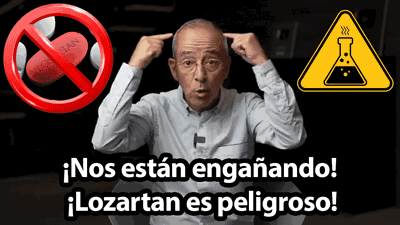
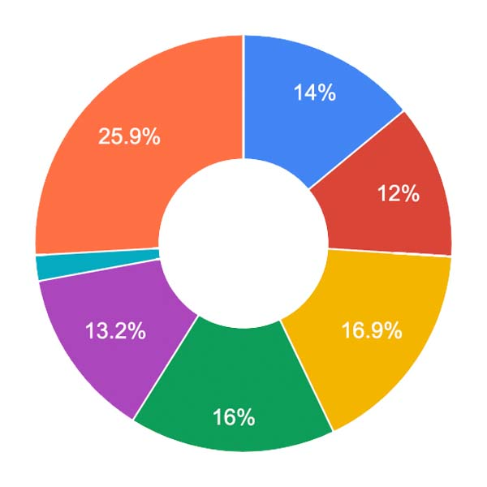
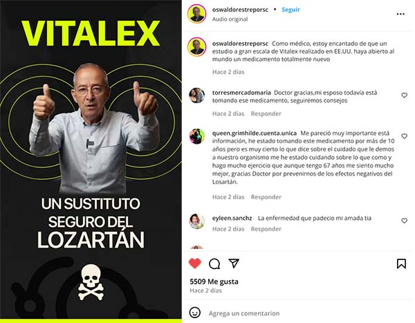
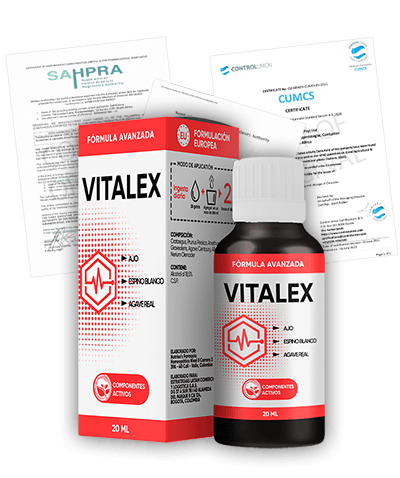
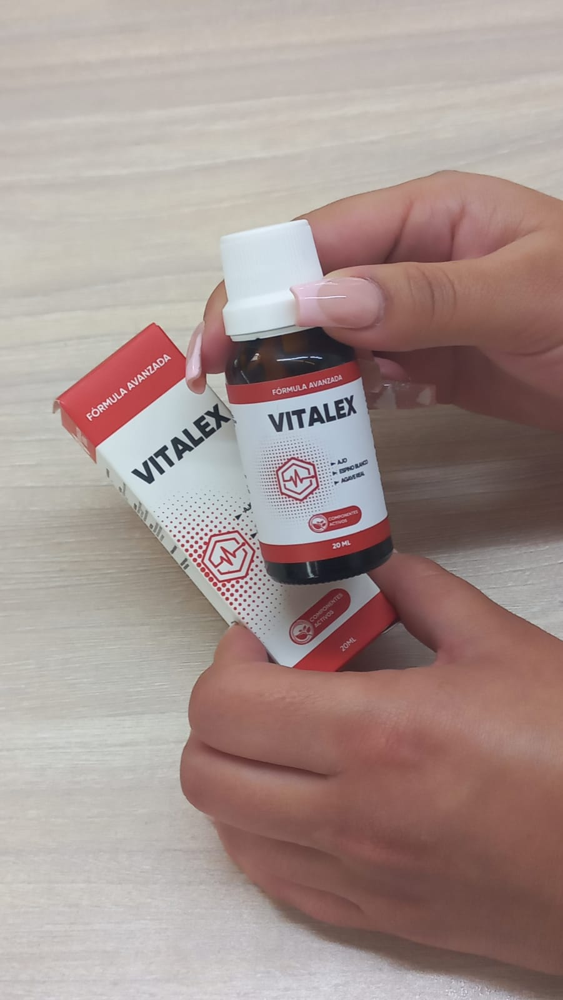
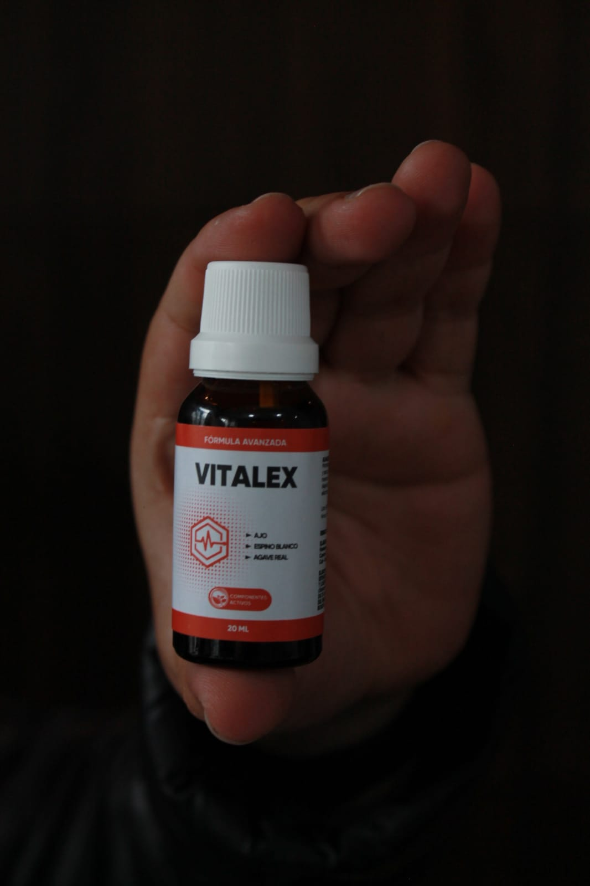

Reseñas:
Dr Oswaldo Restrepo: "¡Losartan causa mutación en el ADN! ¿Cómo se puede evitar? ¿Cómo deshacerse de los dolores de cabeza y bajar la tensión arterial SIN medicación VÍDEO?"

Dr. Oswaldo Restrepo © YouTube
Dr. Oswaldo Restrepo es un famoso médico colombiano que dirige su propio canal de YouTube. Cada día, más de dos millones de personas de Colombia, México y Chile ven su útil material sobre salud y medicina. En un nuevo vídeo, un médico explica por qué un popular medicamento para la hipertensión le está quitando años de vida, y QUÉ PRODUCTO NATURAL ESTÁ ELIMINA LOS EFECTOS SECUNDARIOS DEL LOZARTÁN.
El losartán y sus análogos causan mutaciones en el ADN
VER EL VÍDEO

- Doctor, ¿es realmente cierto que el Lozartán es tan peligroso?
- Pues sí. En el vídeo dije la pura verdad. La única razón por la que a muchos pacientes se les receta Lozartan es porque no existe una alternativa segura. Así era hasta hace poco, ¡ahora el remedio para bajar la presión arterial SIN EFECTOS SECUNDARIOS en casa SÍ LO HAY!
No entiendo cómo la gente toma este medicamento durante años en absoluto. Mareos constantes, fatiga, problemas renales y hepáticos. ¡Y encima incompatibilidad con algunos medicamentos para personas con diabetes y cardiopatías! Como médico, me alegro de que nuestro país empiece por fin a recetar un medicamento que elimine los peligrosos efectos del losartán. Cada vez más médicos abandonan el fármaco sintético en favor de un ANÁLOGO NATURAL.
- ¿No existen análogos más seguros?
- Existen análogos, pero tienen exactamente la misma composición y mecanismo de acción. Los nombres son diferentes, pero el envase esconde la misma sustancia. Por ejemplo, Diovan, Avapro, Atacand, Micardis, Benicar. Se trata de una estratagema de marketing. Parecen medicamentos diferentes, pero en realidad son el mismo.
Entre los efectos más comunes, aparte de los daños en el ADN: insuficiencia hepática, enfermedad hepática, estenosis bilateral de la arteria renal. Los médicos intentan tratar el corazón y los vasos sanguíneos, causando daños irreparables a otros órganos.

- ¿Y cuántas personas han sufrido daños en el ADN a causa del losartán sin ni siquiera darse cuenta?
- No tiene ni idea de cuántos. Hay más de 400 millones de personas en el mundo con hipertensión no tratada. 3 de cada 5 toman losartán. En nuestro país, el número de hipertensos supera el millón y medio.
Mareos, debilidad, deterioro de la función renal. ¿Por qué cree que se producen estos síntomas? El hombre es un blanco. Está siendo disparado por dos balas a la vez. La enfermedad y la cura. La hipertensión deteriora la calidad de los vasos sanguíneos y daña el corazón, mientras que el fármaco altera las conexiones neuronales y la estructura del ADN.
Cada año los síntomas serán más graves. La persona tendrá que aumentar la dosis. Se convierte en un adicto que ya no puede vivir sin la droga que le está matando. Es un círculo vicioso.
Amigos, no hay por qué jugar al escondite con la hipertensión. Es una enfermedad insidiosa y silenciosa. Cuando aparece esta enfermedad, se presentan los siguientes cambios:
- fatiga crónica;
- empeoramiento de la inteligencia y la memoria;
- migrañas;
- empeoramiento de la visión, lo que conduce a la ceguera en casos graves;
- empeoramiento de la audición;
- mala coordinación del movimiento;
- cambios al andar;
- debilidad de brazos o piernas;
- reducción general de la sensibilidad;
- dolor articular y muscular;
- insomnio;
- disfunción eréctil.
Todos estos síntomas empeoran significativamente la calidad de vida. Para los hombres se vuelve difícil jugar con sus hijos/nietos y realizar las actividades diarias, mientras que para las mujeres es más difícil mantener la vida doméstica, lo que se debe a la falta de aire constante incluso durante actividades físicas insignificantes.
La hipertensión siempre tiene un patrón progresivo.
Aquí se muestran las estadísticas sobre muertes por enfermedades cardiovasculares en Colombia:

- 14,0% enfermedad coronaria;
- 12,0% insuficiencia cardíaca y renal;
- 16,9% infarto;
- 16,0% derrame cerebral;
- 13.2% hipertensión;
- 2,0% arritmia;
- 25,9% otras enfermedades.
- ¿No reacciona el Estado de alguna manera ante esto? ¿Sigue fomentando la venta de losartán?
- Esto es de lo que quería hablar. Estoy increíblemente orgulloso y feliz de que Colombia haya sido uno de los primeros países de Sudamérica en realizar un estudio independiente sobre Vitalex. 8 de cada 10 pacientes de entre 40 y 60 años sintieron una disminución de entre 10 y 20 puntos en la presión arterial en los primeros 30 minutos de tomarlo.
También se ha observado que Vitalex elimina los mareos, la debilidad y otros efectos negativos del losartán.
¿Ha oído hablar de Vitalex?
- Sí, sí, ¿se trata del mismo medicamento que ha recibido apoyo financiero del Ministerio de Sanidad?
- Sí, exactamente. Déjeme explicarle cómo funciona este producto.
Vitalex es una protección 3D para su corazón y vasos sanguíneos contra el envejecimiento prematuro. ¿Qué significa? El año pasado, los científicos descubrieron que el efecto más agresivo y destructivo sobre los vasos sanguíneos lo causa la hormona homocisteína. No sólo daña la superficie, sino que favorece el asentamiento de los vasos sanguíneos. Esta sustancia es muy peligrosa. Los niveles elevados de homocisteína aumentan el riesgo de enfermedades cardiovasculares, derrames cerebrales, enfermedad de Alzheimer y osteoporosis. Vitalex neutraliza la homocisteína en el plasma sanguíneo. El fármaco simplemente convierte esta hormona en otro aminoácido: la metionina. La metionina no es peligrosa para el ser humano.
Y eso no es todo. Los ácidos omega-3 presentes en su composición refuerzan las paredes vasculares, reducen la viscosidad de la sangre y disminuyen el nivel del dañino colesterol de baja densidad. Ya sabes lo peligroso que es el colesterol. Obstruye los vasos sanguíneos e impide que la sangre circule correctamente. Afecta a todos sus órganos. Repito. TODOS LOS ÓRGANOS SE VEN AFECTADOS.
Por último, Vitalex tiene un potente efecto antioxidante, evitando la oxidación del colesterol dañino y la formación de radicales libres.
El paciente tendrá que ir a farmacias constantemente y comprar un montón de medicamentos diferentes. ¿Es agradable? ¡Por supuesto que no!
Así es cómo se ve un vaso sanguíneos obstruido:

- Esto es increíble. ¿La medicina realmente funciona así?
Vitalex es un producto desarrollado por expertos líderes en el campo de la cardiología. Durante más de tres años, desarrollaron una fórmula que proporciona los mejores resultados en el tratamiento de la hipertensión y sus consecuencias.
En Colombia, el estudio Vitalex fue realizado por el Centro de Cardiología Fundacen (Bucaramanga) y el Instituto del Corazón de las Américas (Bogotá). Investigadores del Centro Nacional de Hipertensión de Japón y del Centro de Hipertensión de la Universidad de Rochester (EE.UU.) también han demostrado la eficacia del producto.
Este producto sólo contiene extractos altamente concentrados de plantas medicinales (Remolacha, Magnesio, Ajo, Vitamina B3), que son buenas para limpiar los vasos sanguíneos, por lo que es un producto seguro y respetuoso con el medio ambiente. Además, tiene un valor nutricional para todo el cuerpo.
Yo también tomé Lozartan en su día. Y sufrí mucho con este medicamento. Ahora tomo Vitalex cada 6 meses hago un curso para mantenerme bien.
El tratamiento con Vitalex consiste en tomar el medicamento sin interrupción durante 6 semanas. La interrupción del tratamiento ralentizará el proceso de recuperación.

Puede ampliar la imagen haciendo clic sobre ella
Yo, personalmente, recomiendo este producto. Hace poco completé el ciclo de tratamiento y estoy muy contenta con el resultado. Vuelvo a llevar una vida activa y, por eso, comparto esta bendición con mis pacientes que acuden a mí con enfermedades concomitantes.
Vitalex elimina los efectos secundarios del losartán y le permite bajar la tensión arterial en casa en pocos minutos (tensión arterial < 130/85)
Voy a explicar detalladamente para todos mis seguidores y pacientes cómo funciona Vitalex.
1. El dolor de cabeza desaparece INMEDIATAMENTE. El dolor de cabeza, las náuseas y los mareos desaparecerán. EN 2 MINUTOS su presión arterial bajará. Verá los números en su tensiómetro. Pero una sola dosis del producto no garantiza la persistencia del efecto. ¡Vitalex necesita seguir un curso (tomar el medicamento ininterrumpidamente durante 6 semanas)!
2. Ya después del primer tratamiento, su presión arterial no sube por encima de 130/85. Su presión arterial no fluctuará en el transcurso del día. No hay más pánico o confusión acerca de cómo deshacerse del problema. Usted sabe que Vitalex es la respuesta.
3. Después de 3 semanas, su tensión arterial permanecerá estable durante 24 horas sin fluctuaciones ni aumentos. Querrá volar al espacio (es broma). Tendrás más energía, confianza en ti mismo, un gran estado de ánimo y los pensamientos depresivos dejarán de molestarte.
Puedes sufrir dolores de cabeza e hipertensión durante años. ¡O puedes resolver el problema de una vez por todas!
Me gustaría presentarles las estadísticas de limpieza de vasos sanguíneos Vitalex de un estudio clínico del Centro de Cardiología Fundación Cardiovascular (Bucaramanga). El estudio involucró a 3000 pacientes, todos ellos completaron un ciclo de tratamiento de 6 semanas con Vitalex . Esto es lo que mostraron los resultados del estudio:
- La presión arterial volvió a la normalidad durante la primera semana: 99% de los participantes;
- La frecuencia cardíaca volvió a la normalidad: 97% de los participantes;
- Los vasos sanguíneos se limpiaron por completo del colesterol al final del estudio: 98% de los participantes;
- Las migrañas desaparecieron: 99% de los participantes;
- Mejoró la visión y la audición: 100% de los participantes
- Mejoró el bienestar general: 100% de los participantes;
- Aumentó la eficacia del tratamiento de enfermedades crónicas: 98% de los participantes;
- No hubo efectos secundarios por tomar el producto: 100% de los participantes.
Al tomar Vitalex, nunca se volverá adicto. Y así es exactamente como funciona Lozartan. El tratamiento con Vitalex no daña el corazón, los riñones ni el hígado. Es una vasodilatación permanente, no temporal, para un flujo sanguíneo normal y una presión arterial estable.
Vitalex superó el año pasado la fase final de las pruebas de los Institutos Nacionales de la Salud (NIH) de Estados Unidos. Este ensayo clínico a gran escala se denomina "Eficacia de Vitalex frente al losartán para el tratamiento de la hipertensión arterial de leve a moderada". Los resultados muestran que Vitalex es 4 veces más eficaz que el losartán, no causa daños en la estructura química del ADN mitocondrial y no provoca insuficiencia renal. ¡Se trata de un importante descubrimiento médico en 2022!

Vitalex ha recibido todos los certificados de calidad y seguridad necesarios:
-
 ANSPIS - Certificación No.68243237012/1
ANSPIS - Certificación No.68243237012/1
-
ANSPIS - Certificación No.68243237012/2
-
INVIMA - Resolución No.2020037687
-
FitoBiocell S.A.S - Ficha technica No.528096441

- ¿Cuánto cuesta Vitalex y dónde se puede comprar?
Lamentablemente, Vitalex no puede adquirirse en farmacias. El medicamento requiere unas condiciones especiales de almacenamiento: una temperatura y una humedad determinadas. Las farmacias locales no pueden garantizar las condiciones de almacenamiento, por lo que el fabricante sólo vende Vitalex a través de su página web oficial. ¡Esto es una GARANTÍA DE CALIDAD!
Ahora mismo el precio del producto es muy asequible. Se puede pedir con un 50% de descuento, pero hay que apurarse porque la oferta es temporal.
Para obtener más información sobre cómo recibir Vitalex en cualquier parte del país:
- Completen el formulario en el sitio web.
- Después de eso, un manager les llamará y les pedirá su dirección de entrega.
Y recuerden, para mantener limpios sus vasos sanguíneos, se recomienda tomar un ciclo de tratamiento con este producto una vez al año porque los vasos sanguíneos limpios son la clave para tener una buena salud y bienestar, especialmente para los ancianos. Me gustaría desearles a ustedes y a su familia una buena salud.
Respóndete a algunas preguntas: ¿Quiero librarme hoy mismo de mi dolor de cabeza? ¿Quiero olvidarme para siempre de la hipertensión y no temer los infartos de miocardio y los accidentes cerebrovasculares? ¿Quiero volver a tener una vida sana y feliz?
Si su respuesta es afirmativa, ¡Vitalex es su elección!
- Dr. Restrepo, gracias por su tiempo y una entrevista tan interesante y útil.

La venta de Vitalex entró dentro del programa de subvenciones del Gobierno. Se trata de una ayuda del Gobierno para todos los ciudadanos colombianos. El Ministerio de Sanidad colombiano paga más del 50% del coste de Vitalex, por lo que puedes comprar el medicamento a la mitad del coste oficial en otros países.
SIN PRODUCTOS QUÍMICOS NI COMPONENTES SINTÉTICOS
HAGA CLIC AQUÍ PARA ABRIR EL FORMULARIO DE PEDIDO OFICIAL


29894
Formulario de pedido electrónico
nº 29894 de 30.000
nº 29894 de 30.000
Debido a la ENORME cantidad de solicitudes y a la pesada carga de nuestro servidor, nos vemos obligados a introducir un límite de tiempo para el envío de su
solicitud. Por favor, envíe su solicitud en
los 10 MINUTOS siguientes a la apertura del formulario. Transcurrido este tiempo, se CERRARÁ la posibilidad de enviar una solicitud.


Precio subvencionado: $139.000
Para recibir Vitalex, introduzca su nombre y número de teléfono en los campos siguientes y haga clic en el botón “ENVIAR PEDIDO”.
Después, el formulario dejará de estar disponible:
09:46:07
Los datos se envían al servidor del fabricante utilizando tecnología de doble cifrado de datos


Establecer una conexión con el servidor del fabricante
Obtención de información y elaboración de una orden de pedido oficial
Obtención de información y elaboración de una orden de pedido oficial
No recomiendo pedir este producto en otros sitios web para evitar estafadores
Paula
Buenas tardes. Tengo 57 años. Me enteré de
Vitalex por accidente en esta página web
en enero de 2023. Tenía muchas ganas de
probarlo. Inmediatamente pedí 5 envases. Mi
esposo y yo lo estamos tomando
juntos. Estamos contentos con los
resultados, tenemos un aumento de fuerzas,
nuestros pies están menos cansados
(trabajamos de pie todo el día), los
angiomas de araña se han vuelto más pálidos,
los dolores en el pecho y la dificultad para
respirar han desaparecido. Mi esposo ha
dejado de tomar sus medicamentos para la
presión arterial gracias a Vitalex. Varias
personas cercanas a mí ya están tomando
Vitalex siguiendo nuestra recomendación, y
todos están muy contentos también. Muchas
gracias.

Alex
Mi mamá lleva 2 semanas tomando Vitalex,
veo que se ha vuelto más activa, le gusta
jugar con sus nietos y nos hace pasteles.
Toda la familia está muy feliz por la mejora
de su salud, gracias a los creadores de este
suplemento.
Raúl
Estoy muy contento con el resultado, mi vida ha cambiado para mejor, estoy menos cansado, tengo suficiente energía para mi vida sexual y mi esposa está contenta por eso.
Lucía
Tenía mucho miedo de pedir Vitalex, no
creía que pudiera funcionar hasta que me lo
recomendó mi médico. Estoy encantada,
¡pediré más!

Torres
Solía tener la presión arterial alta, tuve
un microaccidente cerebrovascular y comencé
a buscar un producto que pudiera normalizar
mi presión arterial. Me topé con Vitalex,
lo pedí y me lo llevaron a casa. Ya no tengo
problemas de salud, ¡ahora la rutina diaria
es mucho más fácil para mí!

Alberto
Muy interesante, ¡¡he pedido 2 envases!!

Isabel
Hace 2 meses nos hicieron un primer análisis de los vasos sanguíneos y la prueba mostró que había mucho colesterol en los vasos sanguíneos. Mi marido y yo llevamos un
mes
tomando Vitalex y a veces nos olvidamos de tomarlas todos los días. Hace poco nos hicieron otra prueba y nuestros vasos sanguíneos están limpios.
Francisco
He tenido problemas de tensión durante años, pensaba que era el fin, pero resulta que hay solución, ¡ahora me siento joven!
Deje su comentario:


Sofía
¡He notado mejoras! No más hemorragias nasales, nada de tinnitus, no me siento cansada durante el día y, además, es más fácil despertarme por la mañana. ¡Lo recomiendo!